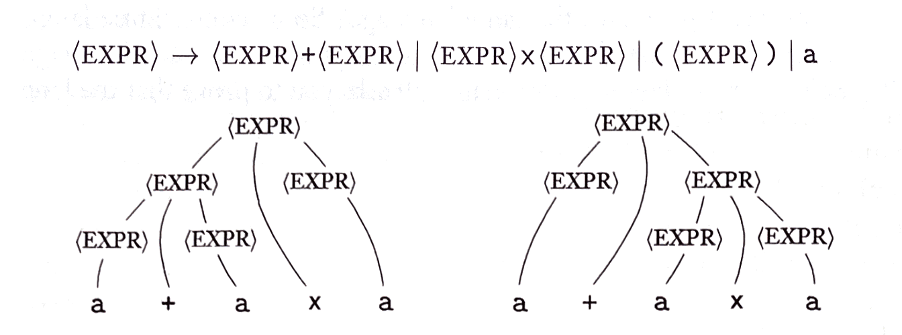

Sipser Computation Theory
Regular
What is a Regular Language?
sipser gospels 1.16
A language is called a regular language if some finite automaton recognizes it.
What languages aren't regular?
The Pumping Lemma for Regular Languages
sipser lemma
If A is a regular language, then there is a number p (the pumping length) where if s is any string in A of length at least p, then s may be divided into three pieces, s = xyz, satisfying the following conditions:
- for each 𝑖 ≥ 0, xy𝑖z ∊ A,
- |y | > 0,
- |xy | ≤ p.
e.g.
let B be the language {0n 1n | n ≥ 0},
and let p, the pumping length, be the number of states of the machine that recognizes B.
- Choose a string that is in the language B, and that satisfies the conditions set above,
let s be the string 0p 1p
- Split the string into xyz,
we can set x to 0,
and set z to 1,
but with y,
if we choose either 0 or 1 to be repeated, the string xyyz (0111 or 0001) is no longer a member of the language,
Since this violates condition 1 of the lemma, the language {0n 1n | n ≥ 0} is not regular
If this language was regular it would be able to repeat the middle section of the string without violating condition 1.
DFA
A deterministic finite automaton is a 5-tuple
(Q, Σ, δ, q0, F )
- Q is a finite set of states
- Σ is a finite alphabet
- δ : Q x Σ → Q is the transition function
- q0 ∊ Q is the start state
- F ⊆ Q is the set of accept states
Every state of a DFA always has
exactly one exiting transition arrow
for each symbol in the alphabet
simple DFA e.g.

NFA
A nondeterministic finite automaton is a 5-tuple
(Q, Σ, δ, q0, F ),
- Q is a finite set of states
- Σ is a finite alphabet
- δ : Q x Σε → P (Q ) is the transition function
- q0 ∊ Q is the start state
- F ⊆ Q is the set of accept states
simple NFA e.g.

The symbol that was added to the alphabet in the transition function, and the symbol on the picture above is
epsilon ε
Nondeterminism brings with it epsilon, which represents an empty string.
Not to be confused with Ø which represents the lack of a string.
Epsilon transitions allow the machine to switch states without reading any input.
Regular Operations
sipser gospels 1.23
Let A and B be languages. We define the regular operations union, concatenation, and star as follows:
- Union: A ∪ B = { 𝑥 | 𝑥 ∊ A or 𝑥 ∊ B }.
- Concatenation: A ○ B = { 𝑥𝑦 | 𝑥 ∊ A and 𝑦 ∊ B }.
- Star: A ∗ = { 𝑥1 𝑥2 … 𝑥𝑘 | 𝑘 ≥ 0 and each 𝑥𝑖 ∊ A }.
Closure under Regular Operations:
Union -
Assuming we are taking the union of machines M1 and M2,
Concatenation -
Assuming we are concatenating strings of the languages for machines M1 and M2,
Star -
Assuming we are taking the Kleene star of the language for machine M1,
regex
sipser gospels 1.23
Say that R is a regular expression if R is
In items 1 and 2, the regular expressions 𝑎 and ε represent the languages {𝑎} and {ε}, respectively. In item 3, the regular expression Ø represents the empty language.
Don't confuse the regular expressions ε and Ø!

An example of a regular expression whos value represents a language that consists of all possible strings of 0's and 1's.
Deterministic Context Free
Context Free
What is a Context Free Language?
andrew gospels 1.01
A language is called a context free language if some context free grammar or pushdown automaton recognizes it.
With regular languages, we looked at the language {0n 1n | n ≥ 0} and determined it was not regular.
Using the newfound computing power of context free languages we find that there is a context free grammar up to the task,
S → S1 | S2
S1 → 0 S1 1 | ε
S2 → 1 S2 0 | ε
Therefore the language {0n 1n | n ≥ 0}
is context free but,
What languages aren't context free?
The Pumping Lemma for Context Free Languages
sipser lemma
If A is a context free language, then there is a number p (the pumping length) where if s is any string in A of length at least p, then s may be divided into five pieces, s = uvxyz, satisfying the following conditions:
- for each 𝑖 ≥ 0, uv𝑖xy𝑖z ∊ A,
- |vy | > 0,
- |vxy | ≤ p.
e.g.
let B be the language {0n 1n 2n | n ≥ 0},
- Choose a string that is in the language B, and that satisfies the conditions set above,
let s be the string 0p 1p 2p
- Split the string into uvxyz,
we find that there is no way to have the same number of 0's, 1's, and 2's without messing up the order, which matters in the language.
Since this violates condition 1 of the lemma, the language {0n 1n 2n | n ≥ 0} is not context free
If this language was context free it would be able to repeat v and y of the string without violating condition 1.
CFG
A context free grammar is a 4-tuple
(V, Σ, R, S ),
- V is a finite set called the variables,
- Σ is a finite set, disjoint from V, called the terminals,
- R is a finite set of rules, with each rule being a variable pointing to a string of variables and terminals,
- S ∊V is the start variable.
simple CFG e.g.
The variable EXPR yields three rules → (EXPR) + (EXPR) | (EXPR) x (EXPR) | (EXPR).
sipser gospels 2.7
If a grammar G can derive a string w ambiguously, more than one way, Grammar G is ambiguous.
What is the simplified form?
sipser gospels 2.8
A context free grammar is in Chomsky normal form if every rule is of the form,
A → BC
A → a
where a is any terminal and A, B, and C are any variables—except that B and C may NOT be the start variable. In addition, we permit the rule S → ε, where S is the start variable.
PDA
A pushdown automaton is a 6-tuple
(Q, Σ, Γ, δ, q0, F ),
- Q is the set of states,
- Σ is the input alphabet,
- Γ is the stack alphabet,
- δ: Q x Σε x Γε → P ( Q x Γε ) is the transition function,
- q0 ∊ Q is the start state,
- F ⊆ Q is the set of accept states.
The formal definition of a pushdown automaton is EQUAL to that of a nondeterministic finite automaton, except for the stack.
Which means that automatically every NFA is a PDA that doesn't use the stack,
This creates a relationship between the regular and context free languages, which is every regular language is a context free language.
A stack is valuable because for theoretical purposes we allow it to hold an unlimited amount of information.
PDA e.g.
The transition function for a PDA takes the form:
read , pop → push
read being replaced with a character that from the input alphabet, Σε, that is read to the machine,
pop and push being replaced with a character from the stack alphabet, Γε, that can pop or push the character off or on to the stack respectively.
Notice how both of the alphabets in the transition function have an ε subscript,
the reason for this is the nondeterminism of a PDA, since the PDA is able to make choices on its next move, we allow epsilon transitions where the machine may or may not
read, pop, or push at all.